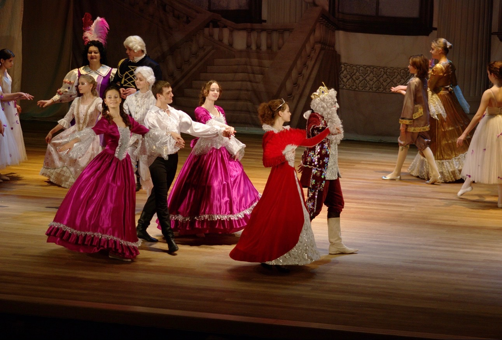
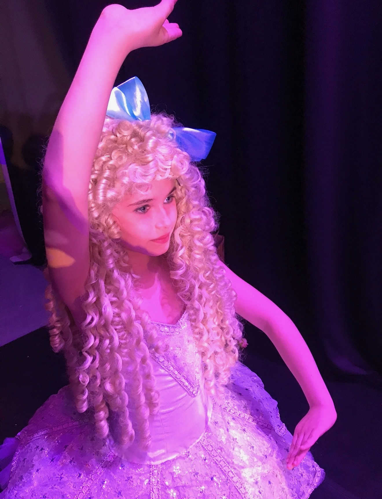
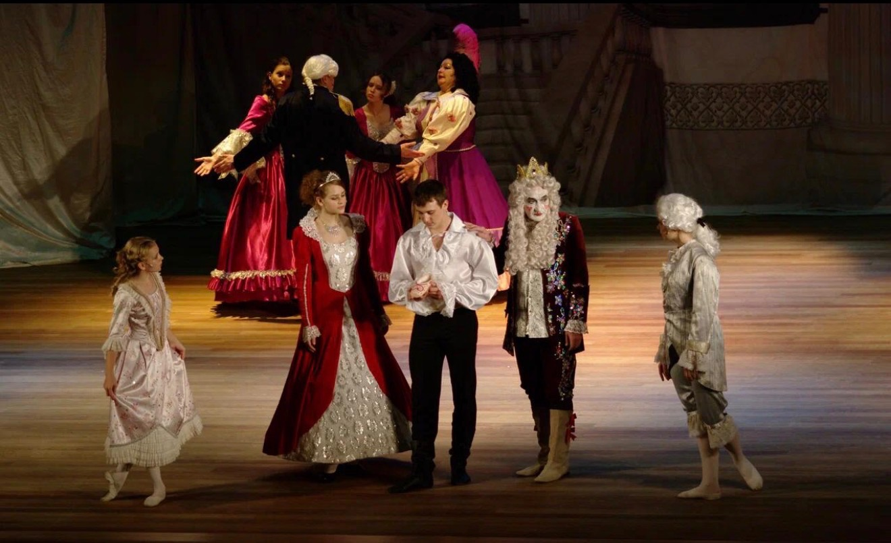

Щелкунчик
Балетный спектакль. Музыка П. И. Чайковского.
Подробнее
Репертуар театра
Сцена — важная часть жизни «Эльфа»: именно здесь занятия, репетиции и творческая работа соединяются в живую театральную постановку.
По мере подготовки воспитанники театра могут становиться участниками спектаклей, знакомиться с настоящей постановочной работой и проживать историю не только в зале, но и перед зрителем.
При этом участие в спектаклях остаётся возможностью, а не обязательным условием обучения.
Репертуар
В репертуаре «Эльфа» — спектакли, которые живут вместе с театром и исполняются разными поколениями воспитанников.
Каждая постановка имеет собственный визуальный мир, сценический характер и художественное решение.
Балетный спектакль. Музыка П. И. Чайковского.
ПодробнееИммерсивный трагический детектив.
Для многих детей перспектива выхода на сцену становится серьёзной мотивацией к занятиям. Во время подготовки к постановке они погружаются в театральную среду и на собственном опыте видят, сколько труда требуется, чтобы множество отдельных сцен, ролей и движений сложились в единый спектакль.
Работа над постановкой требует внимания к партнёрам, дисциплины и ответственности перед общим результатом.
При этом в «Эльфе» спектакли не ставятся выше самих занятий. Ребёнок может заниматься и не выступать, если сцена ему не близка.
Выход на сцену в «Эльфе» добровольный.
Если ребёнок или родители не хотят участвовать в спектаклях, об этом достаточно сказать педагогу — заниматься можно и без выступлений.
В постановках участвуют дети, которым интересна сцена и которые могут полноценно посещать репетиции.
Ребёнку, пришедшему без подготовки, обычно требуется время на обучение. Чаще всего первый выход на сцену становится возможен примерно через один-два года занятий. При наличии предыдущей подготовки это может произойти раньше.
Сценическая работа связана с разными направлениями театра, поэтому путь к спектаклю у каждого воспитанника может быть своим.
Все постановки «Эльфа» проходили через разные поколения воспитанников.
Спектакль сохраняет свою художественную основу, но вместе с новыми исполнителями каждый раз получает новую жизнь.
Для театра особенно важна преемственность поколений: многие бывшие воспитанники «Эльфа» сегодня приводят сюда уже своих детей.
А те выпускники, которые связали взрослую жизнь с театром или балетом, могут вновь выходить на сцену вместе с нынешними воспитанниками.
Все спектакли театра являются авторскими версиями «Эльфа».
Не отходя от основной драматургии произведений и либретто классических балетов, постановки создаются как самостоятельные сценические работы и адаптируются для исполнения детьми.
При этом сохраняется задача сделать спектакль художественно цельным — со своей драматургией, хореографией, образами, костюмами и атмосферой.
Жизнь сцены




Пробное занятие
Для многих воспитанников знакомство с театром начинается с первого занятия.
А дальше у каждого складывается свой путь: для кого-то главными остаются занятия в зале, а для кого-то они постепенно приводят к репетициям, роли и настоящему выходу на сцену.
Пробные занятия бесплатно.